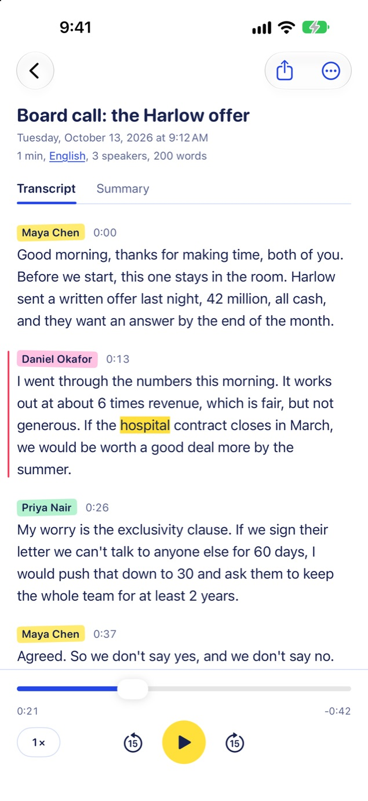
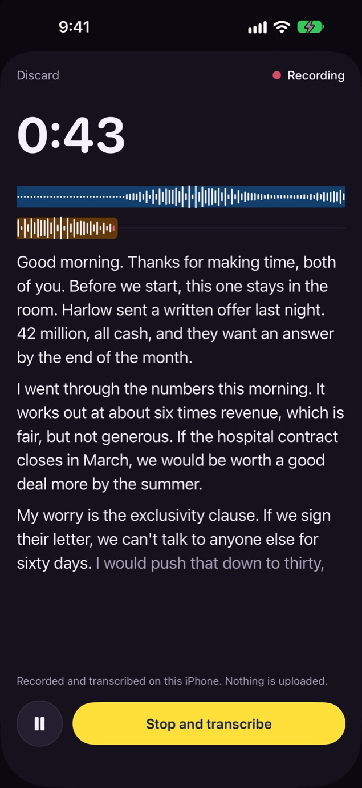
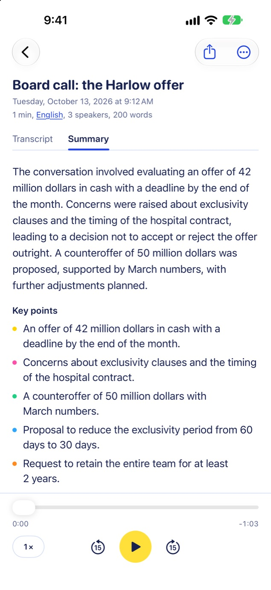
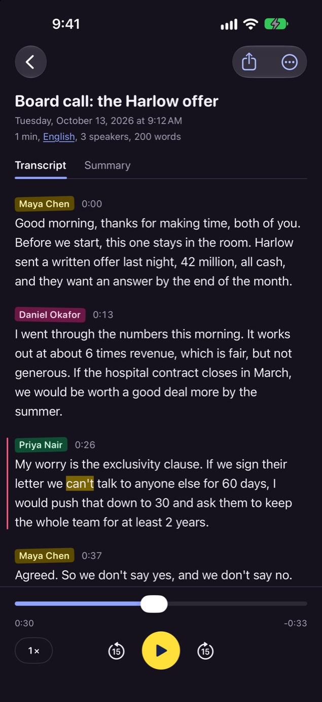
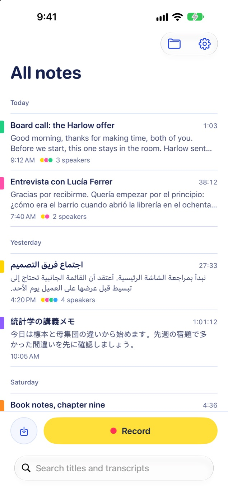
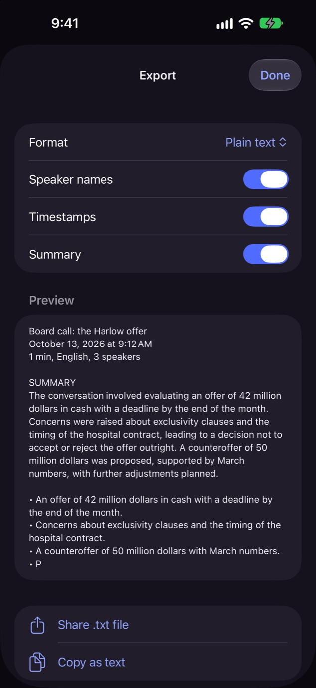

A voice recorder that writes down what was said, and who said it, without sending a word anywhere. The speech model runs on your iPhone or iPad, so your recordings never leave it.

The text follows a couple of seconds behind the voice while you record. When you stop, the whole recording is transcribed again with more care. It works in airplane mode.

An overview, the key points and the action items, by Apple Intelligence on the device.

Speakers are told apart and take the names you give them. Tap a line to hear it again.

Record in Spanish, Arabic, Japanese or 97 others. If the guess is wrong, a tap puts it right.

Bring in audio or video. Take out plain text, Markdown or subtitles, with speakers and times.

Record as much as you like. The first 2 minutes of every recording are transcribed, with speakers, summaries, search and export.
Every recording transcribed in full, however long. Pay by the month, by the year, or once. Your own device does the work, so there is no charge by the minute.
Words while you record are on from the start on iPhone 15 Pro and later and on iPads that support Apple Intelligence; on other devices, switch them on in Settings. Summaries need Apple Intelligence. Speech recognition makes mistakes, so check anything that matters against the recording.